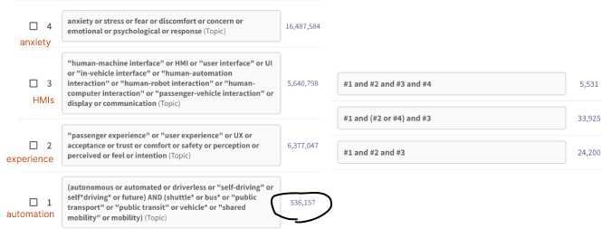
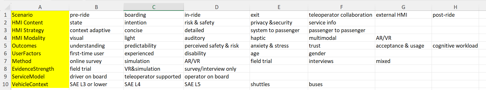

Systematic literature review
Objective
How human-machine interfaces can influence passenger experience and acceptence in connected autonomous shuttles, with a focus on anxiety
Keywords
- AV
"autonomous vehicle*" OR "automated vehicle*" OR driverless OR "driver-less" OR "self-driving" OR self*driving* OR "autonomous driving" OR "automated driving"
- HMI
"human-machine interface" OR "human machine interface" OR HMI OR "user interface" OR "in-vehicle interface" OR "in vehicle interface" OR "passenger-vehicle interface" OR "passenger vehicle interface" OR eHMI OR "external HMI"
or transparency OR "intent* display" OR "intent communication" OR "intention communication" OR "status display" OR "information display" OR "visual display" OR "auditory display" OR "voice interface" OR "audio display" OR haptic OR "haptic feedback" OR "warning system" OR "alert system" OR context-adapt* OR multimodal*
- user experience
anxiet* OR anxio* OR stress* OR emotion* OR worr* OR fear* OR affect* OR arous* OR discomfort OR concern* OR trust OR comfort OR accept* OR willing* OR intent*
or "perceived risk" OR "risk perception" OR "perceived safety" OR "safety perception" OR uncertainty OR "lack of control" OR "sense of control" OR "passenger experience" OR "user experience" OR UX OR "negative affect" OR "emotional state" OR "emotional response" OR confidence OR "situational awareness"
- passenger
(passeng* OR occupant* OR user*) AND ( cabin OR "in-vehicle" OR "in vehicle" OR "in car" OR "in-car" OR shuttle* OR bus* OR "public transport" OR "public transit" OR "shared mobility")
Improvements compared to last month's version
- unknow characters handling
- dashes handling
- narrow down users to passenger specificly
passeng* OR cabin OR "in-vehicle" OR "in vehicle" OR "in car" OR "in-car" OR shuttle* OR bus* OR "public transport" OR "public transit" OR "shared mobility"

Identification: n=3021
- web of science: n=239
- ACM digital library: n=2471
- IEEE Xplore: n=149
- Google Scholar: n=90
- Science Direct: n=72
Note
Google scholar and ScienceDirect don't have a multi fields boolean searches feature, not support '*', not work well when input too long
thus the search results are quite noisy
I combine short phrases and try multiple times. For Google Scholar I only collect the top 10 relevant articles for each attempt.
Records removed before screening: n=1332
- Duplicate
- Poster, abstract, book, report, workshop, review
- non-English
Screening
Records screened: n=1689
Records excluded by reviewing title and abstract: n=1513
-
the context is not vehicle, or is specialised vehicle(autonomous ferry/flight/etc.)
-
no HMI or HMI user is not passenger
- no HMI (no user)
- internal HMI (for driver, car owner)
- external HMI (for other road user(pedestrian, cyclist, motor, scooter, other car, animals))
1st result: n=176
Note
inclusion criteria for 1st result:
- HMI (also include survey and interview about passenger's expectation on HMI and design principles)
- passenger (include taxi/ridesharing passenger, multi users)
- vehicle (include manual and semi/fully autonomous vehicle, and vehicle simulator)
2st result: n=37
inclusion criteria:
autonomous shuttle context
Classify
preliminary labels
